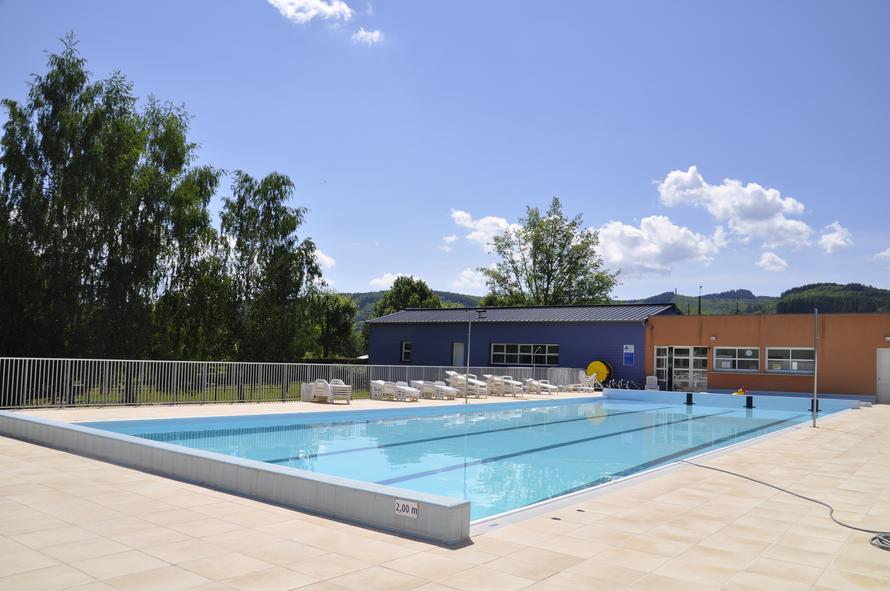

Agent de maintenance
En juillet 2024 et juillet 2025, lors d’un emploi saisonnier, j’ai travaillé au Parc Omnisports Auvergne-Rhône-Alpes—Vichy avec une équipe dynamique.
Mon rôle : assurer la maintenance et garantir un environnement sécurisé et fonctionnel pour les sportifs amateurs et professionnels.
J’ai pris en charge les vestiaires et les buts, réalisé des réparations pour assurer la sécurité et la qualité des infrastructures. J’ai aussi collaboré avec différentes équipes pour répondre efficacement aux besoins du parc.
Cette expérience a renforcé mes compétences techniques en entretien, ainsi que des qualités essentielles comme le travail en équipe, la rigueur et la réactivité. J’ai aussi côtoyé des sportifs de haut niveau, comme l’équipe féminine de Nouvelle-Zélande aux Jeux Olympiques de Paris 2024 et l’équipe de Rodez (National 2).

Agent technique
En août 2025, j’ai travaillé lors d’un emploi saisonnier à la piscine municipale, au sein d’une équipe motivée et soucieuse du confort des visiteurs.
Mes missions consistaient à maintenir les installations en parfait état et à garantir un espace propre, sûr et agréable pour tous les baigneurs.
J’ai assuré l’entretien des bassins, des plages et des locaux techniques, effectué des petites réparations et veillé au respect des normes d’hygiène et de sécurité. J’ai également travaillé en coordination avec l’équipe pour répondre rapidement aux besoins des usagers.
Cette expérience m’a permis de renforcer mes compétences en entretien et maintenance, tout en développant des qualités telles que la rigueur, la réactivité et le sens du service. Travailler dans un environnement fréquenté m’a aussi appris à gérer efficacement les priorités et à m’adapter aux situations diverses.
